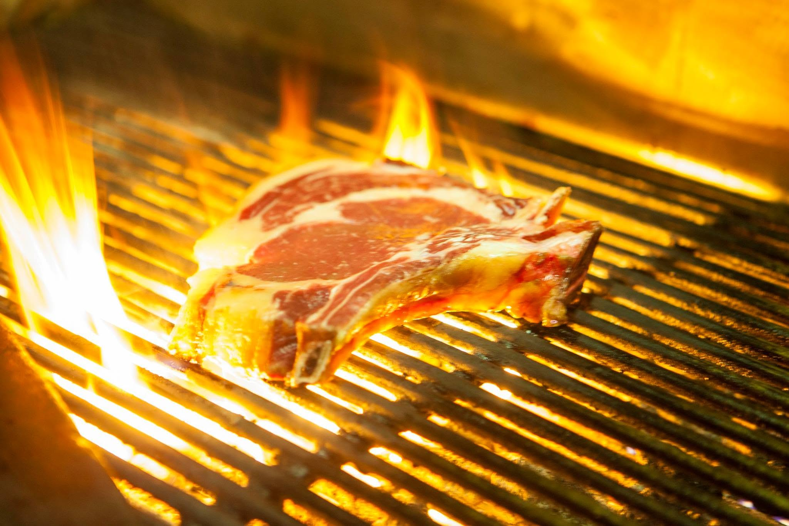
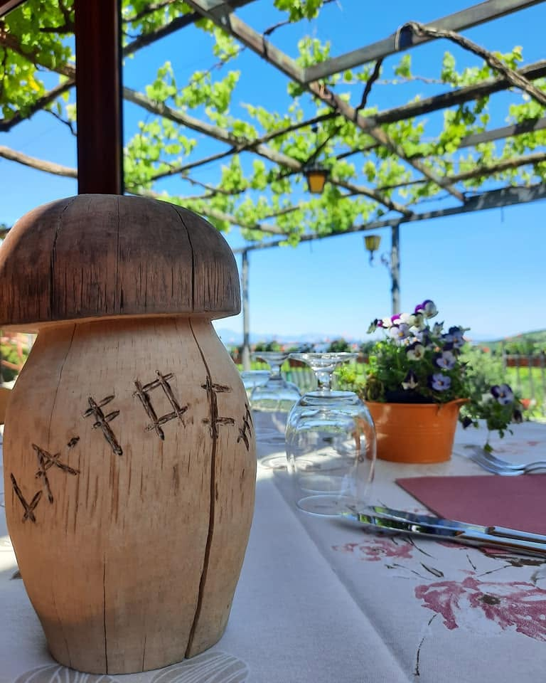
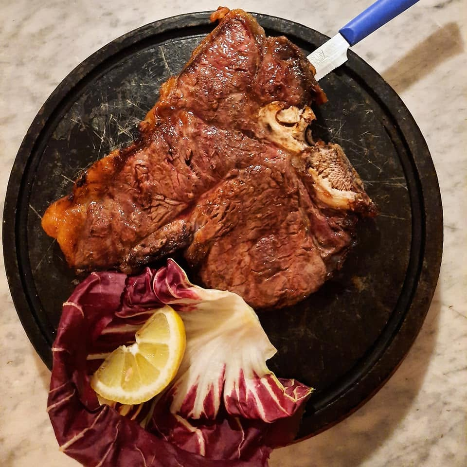
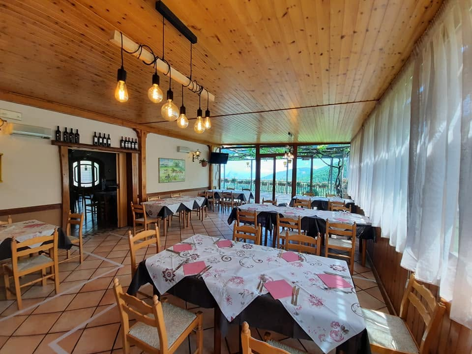
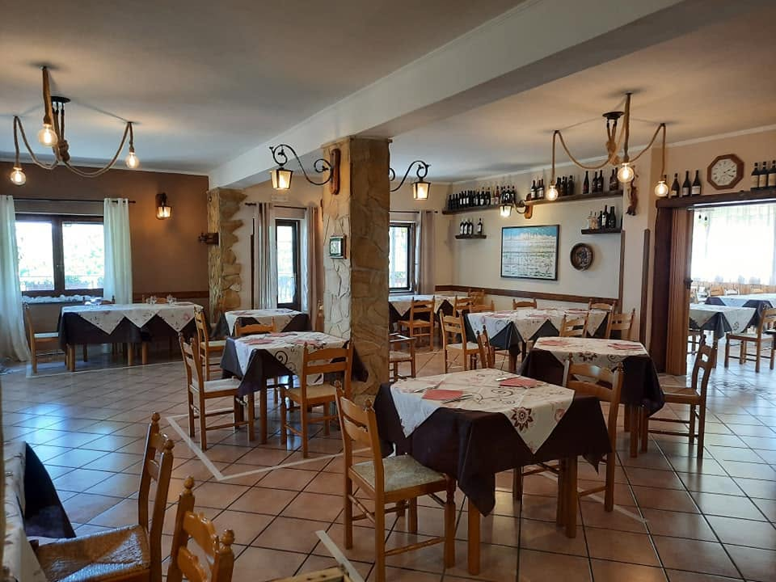
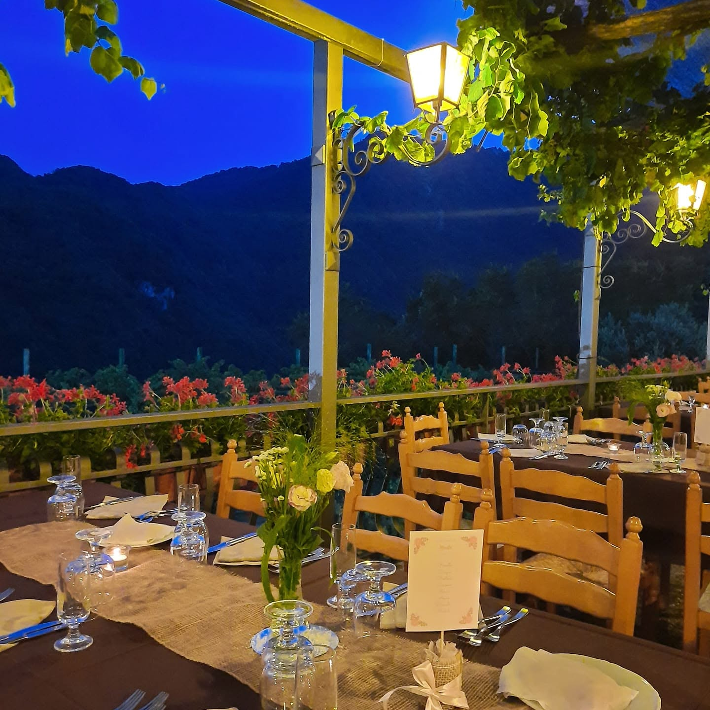
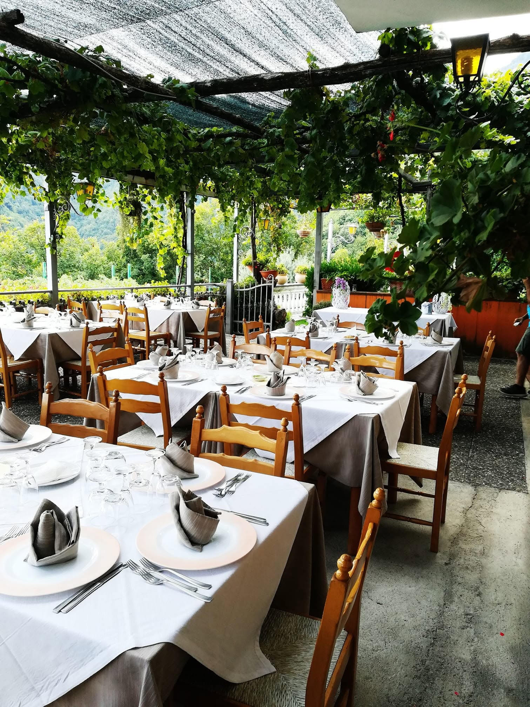
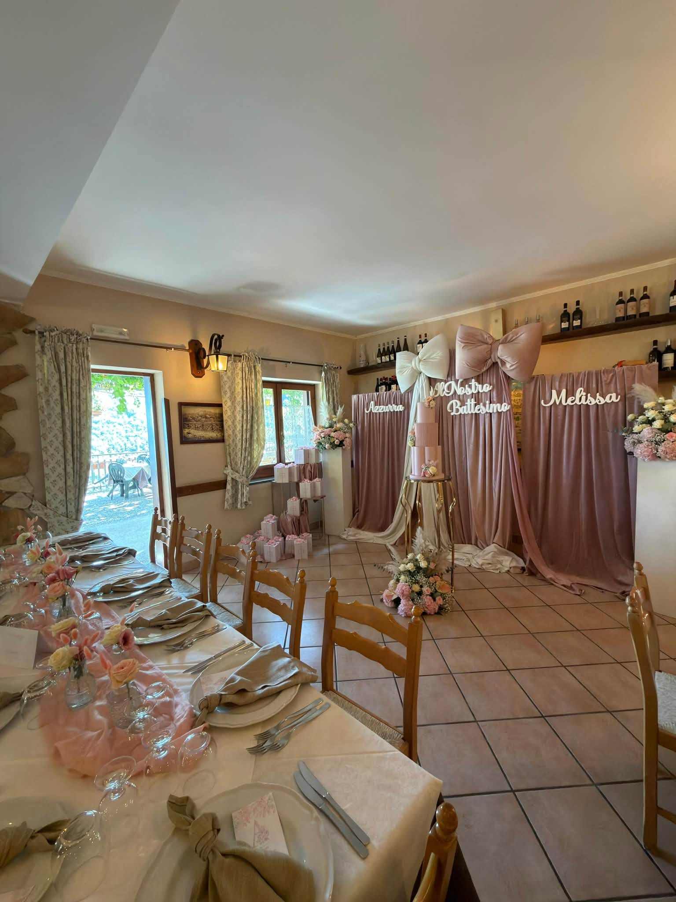

Corpo di Cava · Cava de' Tirreni
Il sapore
Della tradizione.
Pasta fatta a mano, forno a legna e brace. Una cucina di famiglia, dal 1978.
01
Dal 1978
Una tavola
Una tavola
Che sa di casa.
Ci sono sapori che non hanno bisogno di presentazioni. Sono quelli che riconosci al primo assaggio.
A La Foce portiamo in tavola la cucina di sempre: ricette di famiglia, ingredienti scelti e il piacere semplice di stare insieme.
La nostra storia ↗
Corpo di Cava · Salerno
La nostra storia
Tre generazioni,
Tre generazioni,
la stessa cucina.
Tutto è iniziato nel 1978, quando nonna Maria ha aperto le porte di questa piccola trattoria di paese a Corpo di Cava.
Oggi la cucina è ancora la sua, tramandata di generazione in generazione: stesse ricette, stessa cura, stessi ingredienti scelti ogni mattina al mercato.
Il forno a legna che vedete in sala è lo stesso da oltre quarant'anni: acceso ogni giorno, dalle 11 del mattino fino a tarda sera.
“Si mangia bene solo dove si cucina con amore.”
Quello che facciamo
ogni giorno.


La nostra casa
Entra, siediti,
Entra, siediti,
resta un po'.





Eventi
Per qualsiasi
Per qualsiasi
tipo di evento.
Compleanni, cene tra amici, ricorrenze, cene aziendali: a La Foce c'è spazio per ogni occasione. Scrivici e organizziamo insieme la tua giornata.
Chiedi informazioni ↗
Consigliati dallo chef
I piatti che
I piatti che
raccontano La Foce.
I piatti che non mancheranno mai nel nostro menù.
01
Provola con lo speck
Alla brace
02Pappardelle al lardo
Lardo, basilico e patate
03
Bistecca di scottona
Alla brace
Cosa dicono di noi
Le parole
Le parole
dei nostri ospiti.
“
Sembra davvero di essere a cena dai nonni: pasta fatta in casa e un'accoglienza che non si trova più.
“
Siamo stati benissimo, Gianluca ed il suo staff sono carinissimi e tutto quello che abbiamo mangiato è stato di ottima qualità... squisita la provola con lo speck e sublimi i paccheri lardiati. Giornata splendida anche per l'ottimo clima. Da ritornare.
“
Posto molto curato e bello, il servizio è veloce e accogliente. I piatti sono semplici ma buoni e il prezzo davvero contenuto. Ci sono per lo più pizze (tantissima scelta) e molta carne grigliata, anche primi e antipasti. La qualità della carne era buona e le porzioni molto abbondanti. C'è anche un parcheggio interno. Ambiente molto piacevole, da tornarci!

Ti aspettiamo
La tua tavola
La tua tavola
é qui.
Consigliamo la prenotazione nei weekend e per gruppi superiori a 6 persone.
Prenota su WhatsApp ↗ Chiama il ristorante